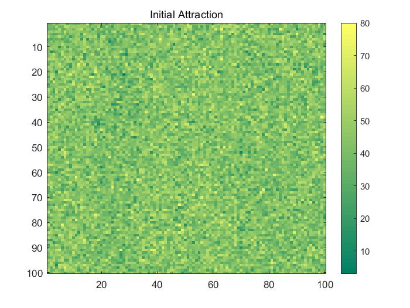
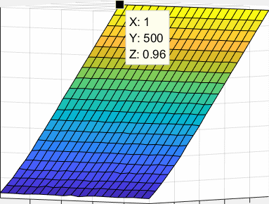
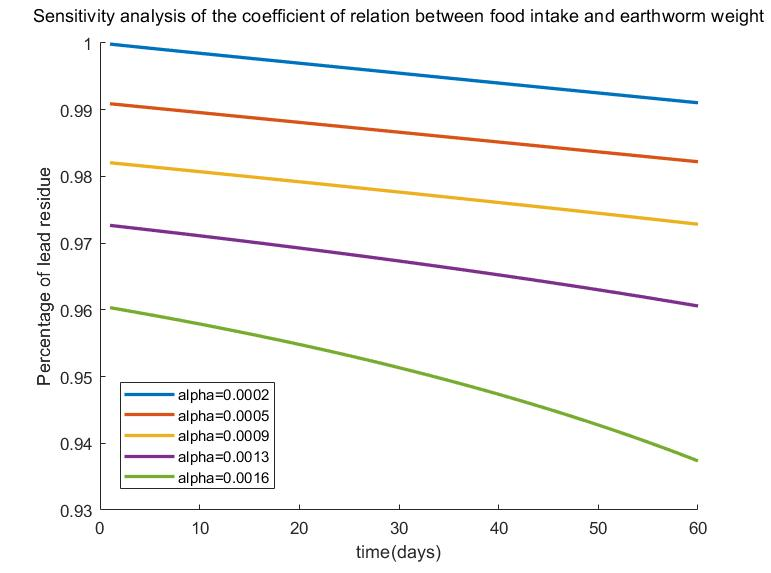
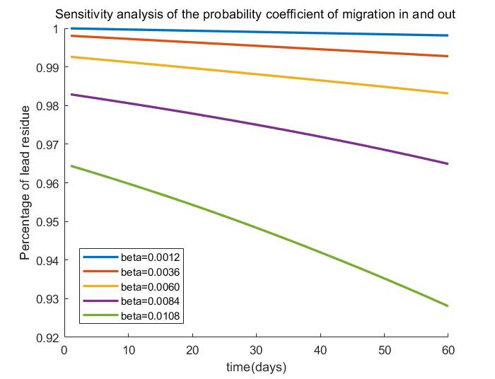

1. What can Cellular Automaton do?
As the carrier of engineered bacteria ( Bacillus Subtilis ) , earthworm can move freely and enrich the lead in the soil by eating during the movement. In this way, the range of movement is roughly equivalent to the range of soil purification by earthworms. By setting a series of model rules, Cellular Automata can automatically simulate material diffusion with certain probability. We hope to use Cellular Automata to simulate the movement of earthworms in soil and record the location of them. The range of soil purification by earthworms can be easily obtained after the movement track of earthworms is obtained.
2. What makes earthworms move?
The movement of earthworms is easily affected by the environment. We assess the attraction of different locations according to the factors such as humidity, organic matter content, geographical features and the real-time number of earthworms. Among them, the real-time number of earthworms had the opposite effect on attraction. In this way, attraction will be the key to the earthworm's movement, and earthworm's trajectory could be predicted.
3. What is the connection between earthworm feeding and soil lead purification?
The engineered bacteria that earthworms carry enable them to deal with lead in the soil. Before the simulation, we’d like to crystallize the ability of processing lead, similarly, the efficiency of soil lead purification by a single earthworm. Earthworms would use this ability to address soil lead pollution every time they feed.
ABSTRACT
Our project is to address soil lead pollution by releasing earthworms carrying the redesigned Bacillus subtilis. To guide experiments and propose optimal earthworm release strategies, we constructed the Cellular Automaton Model to obtain the effects of different strategies. Based on its mechanism, the model could be used to deal with lead pollution of cultivated land in different regions around the world. In this project, different release strategies are analyzed qualitatively, and some general results and release strategies are given.
ASSUMPTIONS
- Earthworm mortality is not considered during soil lead purification by earthworms due to the short treatment time of a single discharge.
- Due to different terrains and other factors, we set different attractions for different regions.
- Dispersive feeding is obviously better than centralized feeding, and our model only seek for the best interval earthworm feeding scheme.
- The active time of earthworms is 8 hours in a day, and it is believed that earthworms are always eating during this time.
- Since earthworms consume less food in one day, we assume that earthworms can process all the lead enriched by food in one day.
- An earthworm eats as much as its own weight in a day.
SYMBOLS & EXPLANATION
List of Variables
| Name | Explanation | Unit |
|---|---|---|
| $$ p\left ( i,j \right ) $$ | Percentage of earthworms entering the target cell in the original cell | $$ - $$ |
| $$ attract\left ( i,j \right ) $$ | The attraction of the cell | $$ - $$ |
| $$ sum_{ew} $$ | The total number of earthworms in the hive | $$ - $$ |
| $$ now_{ew}\left ( i,j \right ) $$ | Real-time earthworm number in a cell | $$ - $$ |
| $$ now_{Pb}\left ( i,j \right ) $$ | Real-time lead content in one cell | $$ mg $$ |
| $$ \Delta Pb\left ( i,j \right ) $$ | The amount of lead in the cell decreased with each update | $$ mg $$ |
| $$ \alpha $$ | Probability coefficient of migration in and out | $$ - $$ |
| $$ \beta $$ | Coefficient of relation between food intake and earthworm weight | $$ - $$ |
List of Constants
| Name | Explanation | Value | Unit |
|---|---|---|---|
| $$ h $$ | The height of the soil to be treated | $$ 12 $$ | $$ cm $$ |
| $$ \rho_{soil} $$ | Soil density | $$ 1.5 $$ | $$ g/cm^{3} $$ |
| $$ \rho_{Pb_{0}} $$ | The amount of lead in the soil at the initial time | $$ 300\pm 20 ^{[1]}$$ | $$ mg/kg $$ |
| $$ m_{ew} $$ | Weight of mature earthworm | $$ 1.2 $$ | $$ g $$ |
| $$ m_{soil} $$ | Weight of soil to be treated within each cell | $$ 3750 $$ | $$ kg $$ |
MODEL
INTRODUCTION TO CELLULAR AUTOMATON
By setting a series of model construction rules, the Cellular Automaton[2] can automatically simulate the diffusion of substances with a certain probability. In dynamic systems, cellular automata can be divided into three types: uniform, periodic and chaotic structure. With a view to the aggregation and periodicity of insect activity and the complexity of boundary conditions caused by topography, the Cellular Automaton with periodic structure is obviously superior. In terms of algorithm complexity and accuracy, the Cellular Automaton performs better than the partial differential equation.
BUILDING AN ENVIRONMENTAL MAP
Considering the range of earthworm activities and topographic features, we set the size of the hive at 500 m×500 m. In addition, considering the effective range, we set the number of cells to 100×100. So the entire environmental map represents a square area covering 2,500 m2 .
Considering that earthworm activity is easily affected by soil conditions and organic substances, we use matrix to simplify topographic map and classify the map according to topographic characteristics and soil conditions. Since it is difficult to obtain accurate topographic maps, we use random maps generated according to the topographic features of Jiangsu Nanjing Baima National Agricultural Science and Technology Zone, and the distribution of organic matter in the target cultivated land. The map is then reduced to a 100 by 100 (0,80) matrix where 80 represents the highest attractive region and 0 represents the lowest attractive region. The matrix is shown in Figure 4.2.1.
Fig 4.2.1
THE EARTHWORMS IN THE CELL
-
In order to simulate the distribution of earthworms in the real life, we abstracted the area into a two-dimensional figure. We first simulated the situation when the distance between earthworms was 50 meters and the number of earthworms in each pile was 10000. The earthworm distribution in the initial state of cellular automata is shown in Figure 4.3.1.
-
All earthworms in the cell have a certain probability to migrate to the nearby cells. Earthworms are more likely to gravitate toward the "highly attractive" cells and stay away from the "less attractive" cells. Therefore, after 2 months of cellular automata evolution, the distribution of earthworms is shown as Figure 4.3.2.
-
In order to record the movement status of earthworms, we set up some movement rules for earthworms.
-
Formula of earthworm migration in and out cellular probability.
$$ p\left ( i,j \right )= \alpha \times attract\left ( i,j \right )\times \frac{1}{\frac{now_{ew}\left ( i,j \right )}{sum_{ew}}+1} $$The probability of migration in and out is proportional to cellular attractiveness and inversely correlated with the number of earthworms in the target location. Here, in order to obtain the dimensionless quantity, we use the relative earthworm number and introduce α，the probability coefficient of migration in and out.
-
Formula of real-time lead variation in a single cell.
$$ \Delta Pb\left ( i,j \right )= m_{eat}\times \rho_{Pb}\left ( i,j \right )\times now_{ew}\left ( i,j \right ) $$ $$ m_{eat}=\beta\times m_{ew} $$ $$ \rho_{Pb}\left ( i,j \right )= \frac{now_{Pb}\left ( i,j \right )}{m_{soil}} $$The change of soil lead concentration was mainly related to earthworm feeding, and we introduced β，a coefficient of relation between food intake and earthworm weight.
-
Fig 4.3.1
Fig 4.3.2
RESULTS & ANALYSIS
Based on the above model setting, when 10,000 earthworms were put into each pile at an interval of 50 meters, after two months, the lead residue of the target land was shown in Figure 5.1 and Figure 5.2.
Fig 5.1.1

Fig 5.1.2
The results suggested that after two months of treatment, the lead concentration in the soil at the initial release point of earthworms decreased by about 10% , and the earthworms had spread in a small area, but with a small distance. Based on this, we decided to adjust the scheme to seek more superior treatment effect.
After that, we carried out simulation analysis on other earthworm feeding schemes. The distance between earthworm feeding was expanded from 1 meter to 100 meters, and the number of earthworm each pile was expanded from 500 to 10,000. Finally, the treatment effects of different treatment combinations were obtained, as shown in Figure 5.3.
Fig 5.2
SENSITIVITY ANALYSIS
Sensitivity analysis could calculate the change range of the ultimate index caused by the change of one or more uncertain factors, and analyzes the impact of the change of each factor on the realization of the expected goal. Therefore, it helps to provide an important advice for project decision.
Probability coefficient of migration in and out
Since it is difficult to determine the probability of earthworm migration in and out of cell, we calculated the parameters by function at the beginning of the model, and introduced the probability coefficients of migration in and out.
Here, we conduct sensitivity analysis on the probability coefficients of migration in and out. The results are as follows (Figure 6.1):
Fig 6.1
Coefficient of relation between food intake and earthworm weight.
The food intake of earthworms determines the lead enriched by earthworms, and the food intake is obviously related to the weight of earthworms. In the model, we added the coefficient of relation between food intake and the weight of earthworms, namely β, to describe the relationship.
Now, we carried out sensitivity analysis on the coefficient of relation between food intake and earthworm weight. The results are as follows(Figure 6.2):
Fig 6.2
The sensitivity analysis results showed that:
- Within a certain range, probability coefficient of migration in and out has little influence on the degree of lead residue in soil. The probability coefficient fluctuation range of the model is about 0.0002-0.0013.
- The coefficient of relation between food intake and earthworm weight has little influence on the degree of soil lead residue. The allowable fluctuation range is 0.0012-0.0084.